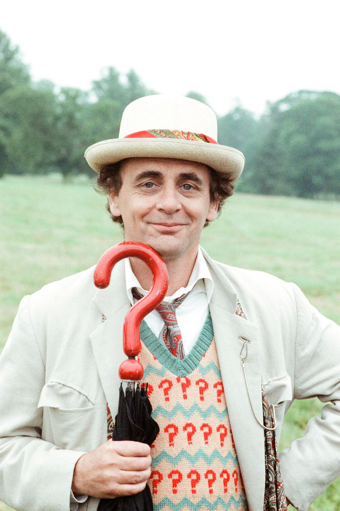

Yedinci Doktor

Britanya bilim-kurgu dizisi Doctor Who'da Doktor'un yedinci yüzüdür. 7. Doktor'u Sylvester McCoy canlandırmıştır. Time of the Rani bölümü ile 7. Doktor gelmiş ve Doctor Who televizyon filminde rejenerasyon geçirmiştir.
6. Doktor Time of the Rani bölümünde TARDIS ile yolculuk ederken Rani TARDIS'i vurmuş ve onun gelişi güzel bir gezegene düşmesine neden olmuştur. Bu düşme sırasında 6.Doktor ölümcül bir yara alarak yeniden canlanmıştır.
Dizi'de 6.Doktor Colin Baker diziden atıldığı için oynamadı. Onun yerine 6.Doktor'u Sylvester McCoy canlandırdı. Böylece Doctor Who tarihinde iki Doktor'u birden oynayan tek oyuncu oldu.
24. Sezon Time of the Rani bölümü ile başlar ve Dragonfire bölümü ile biter. Time of the Rani bölümünde Usta'nın yardımcısı olan Rani Doktor'un yeniden canlanmasına neden olduktan sonra 7. Doktor tarafından alt edilir.
Paradise Towers 4 parttan oluşur ve sezonun 2. bölümüdür.
Delta and the Bannerman bölümü 3 parttan oluşmaktadır ve sezonun 3.bölümüdür.
Dragonfire bölümünde Ace ilk kez gözükür. Mel ve Sabalom Glitz ise dizide son defa gözükürler.
17. sezondan beri ilk defa Usta bu sezonda hiçbir hikayede yer almamıştır.
25. Sezon Remembrance of the Daleks ile başlar ve The Greatest Show in the Galaxy bölümü ile biter. Remembrance of the Daleks bölümünde Doktor son kez Dalekler ve Davros ile karşılaşır. Klasik Seri'de bu bölümden sonra Dalekler ve Davros gözükmez.
The Happiness Patrol bölümü 3 parttan oluşmaktadır ve sezonun 2.bölümüdür.
Silver Nemesis dizinin 25.yılına özel bir bölümdür. Doktor bu bölümde son kez Siberadamlar ile karşılaşır. Klasik seride Siberadamlar bu bölümden sonra gözükmezler.
The Greatest Show in the Galaxy bu bölüm 4 parttan oluşmaktadır ve sezonun 4. ve son hikayesidir.
26. Sezon Battlefield bölümü ile başlar ve Survival bölümü ile biter. Battlefield bölümünde Bridagier Lethbridge-Stewart Doctor Who'da son kez gözükür.
Ghost Light bölümü sezonun ikinci bölümüdür ve 3 parttan oluşmaktadır.
The Curse of Fenric 4 parttan oluşur ve sezonun 3. bölümüdür.
Survival bölümünde Ace son defa gözükür. Bu bölümde Usta'da Klasik Seri'de son defa gözükür. Ayrıca Survival bölümü Klasik Seri'nin bittiği bölümdür. Bu bölümden sonra dizi televizyon yayını olarak 1993'e kadar hiçbir şey yayınlamamıştır.
7. Doktor, 10. Doktor ve 4. Doktor ile birlikte en popüler Doktorlardan biridir. Doctor Who Magazine dergisinin anketlerine göre 7. Doktor 4. Doktor'u bir sefer eleyerek en tanınmış Doktor olmayı başarmıştır.